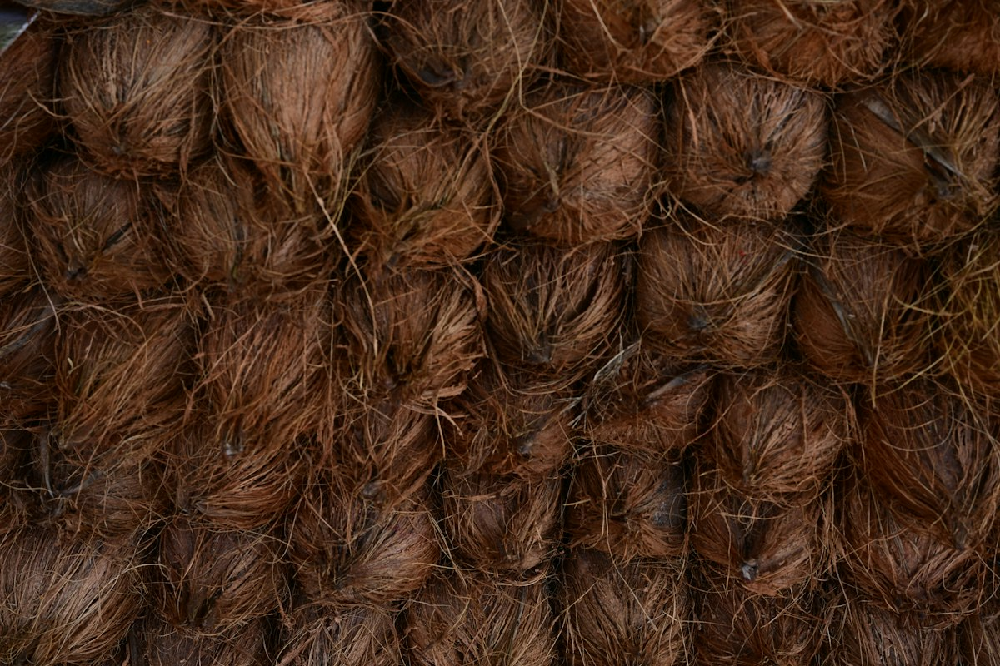

AUN Fiber Lanka (Pvt) Ltd. is a manufacturer and exporter of coco peat, coco peat grow bags, coconut fiber & husk-based growing media, and mattress fiber bales, from Sri Lanka.
AUN Fiber Lanka was founded to bring the natural strength of Sri Lankan coconut husk to growers and manufacturers around the world. What began as a small processing unit in the coconut triangle has grown into a fully-fledged production operation, supplying coco coir substrates and natural fiber products to professional horticulture, home & garden, and industrial customers.
We combine traditional knowledge of coir processing with modern washing, buffering and quality-control systems — ensuring every batch meets the consistency international growers demand.
More About Us
Discuss EC, pH and buffering requirements for growing media, or fiber and packing requirements for industrial products.
Low EC, washed and buffered coco peat and chips grow bags for commercial greenhouses.
Raw and processed coconut fiber, husk chips and mattress fiber baless.
Grow slabs, blocks and buffered substrates engineered for consistent crop performance.
Discuss product specifications, testing requirements and export packing with our team before ordering.
Share your crop or industrial application, specifications, destination and required volume with our team.
Discuss a substrate mix or fiber specification suited to your application.
Agree on sample requirements and the test reports needed before approving your order.
We manufacture, pack and ship your order with complete documentation.
Discuss samples and shipping arrangements with our export team.